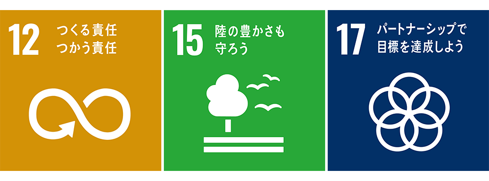
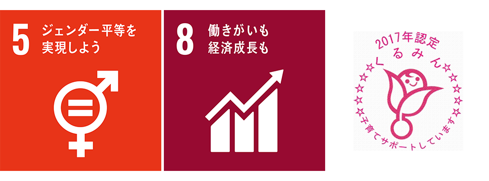

SDGsSDGsへの取り組み
持続可能な開発目標(SDGs)とは 2015年9月の国連サミットで採択された 「持続可能な開発のための2030アジェンダ」にて記載された 2016年から2030年までの国際目標です。
主な取り組み
健康茶・健康食品・化粧品等の通信販売
ダイエット茶、サプリメント等の健康食品の販売に加え、「医薬品・機能性表示食品」の品揃え拡充も進めております。
「ウェルネス＆ライフサポート企業」として、グループ全体でお客様の暮らしをサポートする商品を販売しております。
hugmナチュラルシャンプーの販売

近年、消費者のリーフ茶離れによる茶葉の価格低迷等、茶生産農家は厳しい状況が続いています。さらに、高齢化・後継者不足のため、手入れ不足となる茶畑が増加しています。
hugmナチュラルシャンプーに配合している茶の実オイルは、静岡県で長きに渡りお茶に携わってきている製茶問屋「白形傳四郎商店」さんで抽出された茶の実オイルを使用しています。
静岡県の茶畑景観を守る事で陸の豊かさを守る。
作るからには商品の製造工程、販売においても責任を持ってしっかりと使っていただく工夫をしていきたいと考えています。
春には青々とした茶畑で茶摘みを、秋には白い花が咲き誇る畑で茶の実拾いを。
そんな四季折々の茶畑の風景が当たり前になる日をを夢見て、茶の実拾いをしていただいている事業所の皆様、オイルを抽出いただいている皆様、商品の製造を行っていただいている皆様、多くの皆様と協力していきたいと考えております。
働きやすい職場環境の整備

ダイエット茶、サプリメント等の健康食品の販売に加え、「医薬品・機能性表示食品」の品揃え拡充も進めております。
「ウェルネス＆ライフサポート企業」として、グループ全体でお客様の暮らしをサポートする商品を販売しております。
（取り組み事例）
・ NO残業DAYの設定
・ テレワーク導入
・ くるみんマークの取得
・ 育児休業、有給取得推進日（推進のための活動）
・ 外国人採用、女性の活躍推進